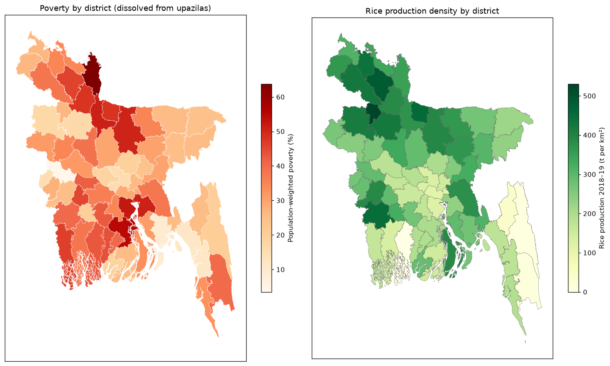
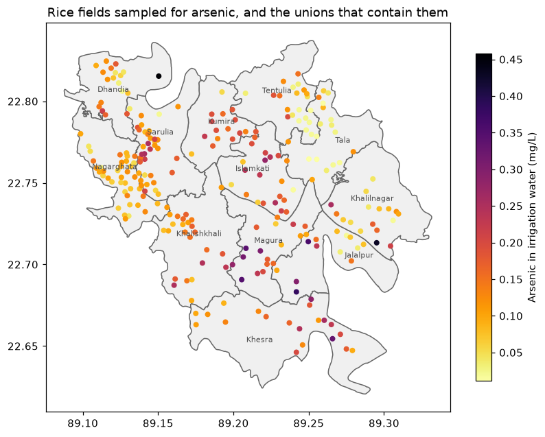

SQL is the language of databases, and every major cloud data platform speaks a spatial dialect of it: PostGIS, DuckDB, BigQuery, Snowflake, Databricks and Apache Sedona all offer functions such as ST_Intersects, ST_Area and ST_Union. Spatial SQL lets you join, aggregate and filter millions of features close to where the data are stored, then hand a small result to Python. This notebook teaches spatial SQL on real Bangladesh data with DuckDB, an in-process database that needs no server, queries files directly and runs inside a notebook or a cloud function. It then shows that a GeoPackage is a SQLite database you can query, and how the same queries move to PostGIS, the standard spatial database for web GIS servers.
Learning objectives
Load shapefiles, CSV tables and GeoParquet into DuckDB and inspect geometry columns.
Use the core spatial functions: validity, area, length, centroid, buffer, transform and union.
Write attribute joins, spatial joins, dissolves and window functions, and check join quality.
Understand when spatial indexes help, and avoid the coordinate-axis trap of ST_Transform.
Move results to GeoPandas and export them as GeoParquet, GeoPackage or FlatGeobuf.
Query a GeoPackage with SQL through GDAL, and translate queries to PostGIS and cloud warehouses.
Data
Data
Source
Upazila (sub-district, admin level 3) and union (admin level 4) boundaries of Bangladesh
Dissolve and aggregate: from upazilas to districts
Spatial joins: arsenic in rice fields
Distance queries and window functions
Spatial indexes: when they help
From SQL to GeoPandas and to files
A GeoPackage is a SQLite database
PostGIS and cloud warehouses
Summary and exercises
Setup
Installation. This notebook needs installation option 6 (every GeoLattice module): pip install "geolattice[all]". See “Installation options” in the GeoLattice README.
Code
# Setup: imports, paths, output folder, and an in-memory DuckDB with the spatial extension%matplotlib inlineimport osimport shutilimport timeimport warningsfrom pathlib import Pathwarnings.filterwarnings("ignore", category=UserWarning)import duckdbimport numpy as npimport pandas as pdimport geopandas as gpdimport matplotlib.pyplot as pltimport geolatticeimport geolattice.web as webfrom geolattice.vector import read_geoparquet, write_geoparquetplt.rcParams.update({"figure.dpi": 110})DATA = Path("../../../Data")BD = DATA /"00_shared"/"vector_data"/"Bangladesh"OUT = DATA /"00_shared"/"data_web_cloud_gis"/"08_03_outputs"if OUT.exists(): shutil.rmtree(OUT)OUT.mkdir(parents=True)# Connect and load DuckDB spatial; helpers return pandas / GeoDataFramescon = duckdb.connect() # an in-memory databasecon.sql("INSTALL spatial; LOAD spatial; SET enable_progress_bar = false;")print("geolattice", geolattice.__version__, "| DuckDB", duckdb.__version__,"| spatial functions:", con.sql("SELECT count(DISTINCT function_name) FROM duckdb_functions() WHERE function_name LIKE 'ST_%'").fetchone()[0])def q(sql):"Run SQL and return a pandas DataFrame."return con.sql(sql).df()def to_gdf(sql, geom="geom", crs=4326):"Run SQL whose result has a geometry column and return a GeoDataFrame (geometry travels as WKB)." df = con.sql(f"SELECT * EXCLUDE ({geom}), ST_AsWKB({geom}) AS __wkb FROM ({sql})").df() geometry = gpd.GeoSeries.from_wkb(df.pop("__wkb").map(bytes), crs=crs)return gpd.GeoDataFrame(df, geometry=geometry.values, crs=crs).rename_geometry(geom)
Analysis of files (Parquet, GeoParquet, shapefiles, CSV) locally or over HTTP/S3
~150 ST_ functions (GEOS, PROJ, GDAL)
PostgreSQL + PostGIS
A database server
Multi-user web GIS back ends, transactions, OGC API and tile servers
The reference implementation, several hundred functions
SQLite + SpatiaLite / GeoPackage
A file
Desktop and mobile, single-user editing
SpatiaLite functions; GeoPackage R-tree
BigQuery, Snowflake, Redshift
Cloud data warehouses
Very large tables, pay per query
ST_ functions on GEOGRAPHY types
Databricks / Apache Sedona, Spark
Clusters
Distributed processing of billions of features
ST_ functions on Spark DataFrames
They share the SQL/MM spatial vocabulary, so most queries move between them with small changes (Section 12). DuckDB needs nothing installed beyond pip install duckdb, which is why we learn the patterns with it.
Loading data into DuckDB
ST_Read reads any GDAL vector format into a table with a geom column; read_csv reads plain tables. Tables live in memory unless you connect to a database file.
Code
# Load Bangladesh shapefiles and CSVs into DuckDB tables (points built with ST_Point)SHP = BD /"Shapefiles"t0 = time.perf_counter()con.sql(f"CREATE TABLE upazila AS SELECT * FROM ST_Read('{(SHP /'bd_upzila_GCS.shp').as_posix()}')")con.sql(f"CREATE TABLE unions AS SELECT * FROM ST_Read('{(SHP /'bd_union_GCS.shp').as_posix()}')")con.sql(f"CREATE TABLE poverty AS SELECT * FROM read_csv('{(BD /'bd_poverty.csv').as_posix()}')")con.sql(f"CREATE TABLE indicators AS SELECT * FROM read_csv('{(BD /'bd_upazila_indicators.csv').as_posix()}')")con.sql(f'''CREATE TABLE rice AS SELECT ADM2_PCODE, ADM2_EN, ADM1_EN, Aus, Aman, Boro FROM ST_Read('{(BD /"bd_district_rice_production_2018_2019_BTM.shp").as_posix()}')''')con.sql(f'''CREATE TABLE fields AS SELECT ID, WAs AS water_as, SAs AS soil_as, GAs AS grain_as, Variety AS variety, Land_type AS land_type, ST_Point(Longitude, Latitude) AS geom FROM read_csv('{(BD /'bd_arsenic_data.csv').as_posix()}')''')print(f"Loaded in {time.perf_counter() - t0:.2f} s")q('''SELECT table_name, estimated_size AS rows, column_count AS columns FROM duckdb_tables() ORDER BY table_name''')
Loaded in 0.55 s
table_name
rows
columns
0
fields
263
7
1
indicators
545
127
2
poverty
544
2
3
rice
64
6
4
unions
5160
20
5
upazila
544
18
Code
# Inspect selected columns and types from the upazila tableq("DESCRIBE upazila").iloc[[0, 2, 6, 8, 10, -1]][["column_name", "column_type"]]
column_name
column_type
0
OGC_FID
BIGINT
2
Shape_Area
DOUBLE
6
ADM3ALT1EN
VARCHAR
8
ADM2_EN
VARCHAR
10
ADM1_EN
VARCHAR
17
geom
GEOMETRY('EPSG:4326')
The geometry column is typed GEOMETRY('EPSG:4326'): DuckDB records the coordinate system with the column. Upazila and union tables carry the full administrative hierarchy (ADM1 division, ADM2 district, ADM3 upazila, ADM4 union), with names (_EN) and codes (_PCODE).
Spatial functions and the axis-order trap
A first query uses several functions at once: validity, geometry type, vertex count, area on the ellipsoid and the centroid.
Code
# Geometry summary: type, validity, area, and centroid for the largest upazilasq('''SELECT ADM3_EN AS upazila, ADM2_EN AS district, ST_GeometryType(geom) AS type, ST_IsValid(geom) AS valid, ST_NPoints(geom) AS vertices, round(ST_Area_Spheroid(ST_FlipCoordinates(geom)) / 1e6, 1) AS area_km2, round(ST_X(ST_Centroid(geom)), 4) AS lon, round(ST_Y(ST_Centroid(geom)), 4) AS latFROM upazilaORDER BY area_km2 DESCLIMIT 5''')
upazila
district
type
valid
vertices
area_km2
lon
lat
0
Baghai Chhari
Rangamati
POLYGON
True
2589
1616.1
92.2295
23.3731
1
Shyamnagar
Satkhira
MULTIPOLYGON
True
11191
1544.4
89.1793
22.0690
2
Mongla
Bagerhat
MULTIPOLYGON
True
11867
1268.5
89.6544
22.1271
3
Koyra
Khulna
MULTIPOLYGON
True
10123
1255.2
89.3822
22.1455
4
Thanchi
Bandarban
POLYGON
True
1702
1078.9
92.5309
21.6373
For metric work (buffers, distances, areas) data are usually projected. Here is the trap: EPSG:4326 officially lists latitude first. DuckDB’s ST_Transform follows the official axis order unless told otherwise, so a point stored as (longitude, latitude) is read the wrong way round.
Code
# Compare ST_Transform axis order with and without always_xy := trueq('''SELECT ST_AsText(ST_Transform(ST_Point(90.40, 23.81), 'EPSG:4326', 'EPSG:32646')) AS default_order, ST_AsText(ST_Transform(ST_Point(90.40, 23.81), 'EPSG:4326', 'EPSG:32646', always_xy := true)) AS always_xy, ST_AsText(ST_Transform(ST_Point(23.81, 90.40), 'EPSG:4326', 'EPSG:32646')) AS lat_lon_input''')
default_order
always_xy
lat_lon_input
0
POINT (inf inf)
POINT (235102.69622060267 2635618.6821711794)
POINT (235102.69622060267 2635618.6821711794)
The first column is the trap: transforming ST_Point(90.40, 23.81) from EPSG:4326 with the default settings gives POINT (inf inf), because DuckDB read 90.40 as a latitude, which is impossible. Supplying the coordinates as (latitude, longitude), or adding always_xy := true, gives the correct UTM position (about 235 km east, 2,636 km north). Coordinates in files are almost always stored longitude first, so use always_xy := true whenever the source is EPSG:4326.
The query above it also shows why projected or ellipsoidal measures matter: the largest upazilas are in the Chittagong Hill Tracts (Baghai Chhari, 1,616 km²) and the Sundarbans coast (Shyamnagar, Mongla, Koyra). The coastal ones are multipolygons with over 10,000 vertices each, because of their many islands and channels.
Attribute joins and join quality
The poverty table has one row per upazila with an upazila code (ADM3_PCODE), so joining it to the upazila polygons should give a poverty map. Before trusting any join, check three numbers: how many rows match, how many rows are left over on each side (anti-joins), and whether the key is unique.
Code
# Check how well poverty rows join to upazila polygons on ADM3_PCODEq('''SELECT (SELECT count(*) FROM upazila) AS polygons, (SELECT count(*) FROM poverty) AS poverty_rows, (SELECT count(DISTINCT ADM3_PCODE) FROM poverty) AS distinct_codes_in_table, (SELECT count(*) FROM upazila u JOIN poverty p USING (ADM3_PCODE)) AS joined_rows, (SELECT count(*) FROM upazila u ANTI JOIN poverty p USING (ADM3_PCODE)) AS polygons_without_data''')
polygons
poverty_rows
distinct_codes_in_table
joined_rows
polygons_without_data
0
544
544
525
544
19
Code
# Find ADM3_PCODE values that appear with more than one upazila name in bd_datacon.sql(f"CREATE TABLE bd_data AS SELECT * FROM read_csv('{(BD /'bd_data.csv').as_posix()}')")q('''SELECT p.ADM3_PCODE, count(*) AS rows_with_this_code, list(DISTINCT b.DISTRICT_NAME || ' / ' || b.UPAZILA_NAME) AS upazilas_in_table, list(DISTINCT p.POVERTY_PERCENT) AS poverty_values, any_value(u.ADM2_EN || ' / ' || u.ADM3_EN) AS polygon_with_this_codeFROM poverty pJOIN bd_data b USING (ADM3_PCODE, POVERTY_PERCENT)JOIN upazila u USING (ADM3_PCODE)GROUP BY p.ADM3_PCODE HAVING count(*) > 1ORDER BY rows_with_this_code DESC LIMIT 6''')
ADM3_PCODE
rows_with_this_code
upazilas_in_table
poverty_values
polygon_with_this_code
0
BD303334
4
[Jhenaidah / Kaliganj, Satkhira / Kaliganj, La...
[48.0, 35.3, 24.0, 15.7]
Gazipur / Kaliganj
1
BD305610
3
[Khulna / Daulatpur, Manikganj / Daulatpur, Ku...
[29.4, 34.5, 4.0]
Manikganj / Daulatpur
2
BD457218
2
[Netrakona / Durgapur, Rajshahi / Durgapur]
[25.7, 30.2]
Netrakona / Durgapur
3
BD201547
2
[Chittagong / Lohagara, Narail / Lohagara]
[18.3, 19.9]
Chittagong / Lohagara
4
BD558576
2
[Rangpur / Pirganj, Thakurgaon / Pirganj]
[23.3, 46.9]
Rangpur / Pirganj
5
BD302662
2
[Dhaka / Nawabganj, Dinajpur / Nawabganj]
[37.3, 21.1]
Dhaka / Nawabganj
The numbers do not add up. 544 rows joined, yet 19 polygons got no data, and the table has only 525 distinct codes for 544 rows. Sixteen codes are repeated, and the repeats carry different poverty values: BD303334 appears four times (15.7, 24.0, 35.3 and 48.0%), once for each upazila called Kaliganj in four districts.
Whoever built the table assigned codes by upazila name, so upazilas sharing a name received the same code. A plain join therefore attaches four different poverty rates to Gazipur’s Kaliganj and none to the other three. Here the row count looked right, which makes this the most dangerous kind of join error. Checking count(DISTINCT key) catches it.
The fix is a key that really identifies an upazila: the district code plus the upazila name. bd_data.csv holds the same poverty values with district codes and names. Names still differ in spelling, so we join in three steps and record how each row was matched:
exact match on district code and lower-case name;
fuzzy match for the rest: same district (by code, or by a near-identical district name), names normalised (spaces, punctuation, “Upazila” and bracketed parts removed), best Jaro-Winkler similarity of at least 0.9;
a small manual lookup for names that changed, which no string similarity can find.
Code
# Build poverty_clean: exact name match, then fuzzy match, then a few manual fixescon.sql(r'''CREATE MACRO norm(s) AS regexp_replace(regexp_replace(lower(trim(s)), '\s*upazila$|\s*\(.*\)', '', 'g'), '[^a-z]', '', 'g')''')con.sql("CREATE TABLE manual_names (district VARCHAR, upazila VARCHAR, table_district VARCHAR, table_upazila VARCHAR, reason VARCHAR)")con.sql('''INSERT INTO manual_names VALUES ('Jessore', 'Kotwali', 'Jessore', 'Jessore Sadar', 'Kotwali is the Jessore Sadar upazila'), ('Nawabganj', 'Nawabganj Sadar', 'Chapai Nababganj', 'Chapai Nababganj Sadar', 'Nawabganj district was renamed Chapai Nawabganj')''')con.sql('''CREATE TABLE poverty_clean ASWITH exact AS ( SELECT u.ADM3_PCODE, b.POVERTY_PERCENT AS poverty, 'exact' AS matched_by FROM upazila u JOIN bd_data b ON u.ADM2_PCODE = b.DISTRICT_PCODE AND lower(trim(u.ADM3_EN)) = lower(trim(b.UPAZILA_NAME))),rest_u AS (SELECT * FROM upazila WHERE ADM3_PCODE NOT IN (SELECT ADM3_PCODE FROM exact)),rest_b AS (SELECT * FROM bd_data b WHERE NOT EXISTS ( SELECT 1 FROM upazila u WHERE u.ADM2_PCODE = b.DISTRICT_PCODE AND lower(trim(u.ADM3_EN)) = lower(trim(b.UPAZILA_NAME)))),fuzzy AS ( SELECT ADM3_PCODE, poverty, 'fuzzy' AS matched_by FROM ( SELECT u.ADM3_PCODE, b.POVERTY_PERCENT AS poverty, jaro_winkler_similarity(norm(u.ADM3_EN), norm(b.UPAZILA_NAME)) AS sim, row_number() OVER (PARTITION BY u.ADM3_PCODE ORDER BY jaro_winkler_similarity(norm(u.ADM3_EN), norm(b.UPAZILA_NAME)) DESC) AS r FROM rest_u u JOIN rest_b b ON u.ADM2_PCODE = b.DISTRICT_PCODE OR jaro_winkler_similarity(norm(u.ADM2_EN), norm(b.DISTRICT_NAME)) > 0.9) WHERE r = 1 AND sim >= 0.9),manual AS ( SELECT u.ADM3_PCODE, b.POVERTY_PERCENT AS poverty, 'manual' AS matched_by FROM manual_names m JOIN upazila u ON u.ADM2_EN = m.district AND u.ADM3_EN = m.upazila JOIN bd_data b ON b.DISTRICT_NAME = m.table_district AND b.UPAZILA_NAME = m.table_upazila)SELECT * FROM exact UNION ALL SELECT * FROM fuzzy UNION ALL SELECT * FROM manual''')q('''SELECT matched_by, count(*) AS upazilas FROM poverty_clean GROUP BY 1 UNION ALL SELECT 'total distinct codes', count(DISTINCT ADM3_PCODE) FROM poverty_clean UNION ALL SELECT 'polygons still without data', (SELECT count(*) FROM upazila u ANTI JOIN poverty_clean USING (ADM3_PCODE))''')
matched_by
upazilas
0
exact
521
1
manual
2
2
fuzzy
21
3
total distinct codes
544
4
polygons still without data
0
Population comes from a third table keyed only by upper-case district and upazila names; the same normalise-then-fuzzy approach links it.
Code
# Fuzzy-match population from the indicators table onto upazila polygons by namecon.sql('''CREATE TABLE pop_clean ASSELECT ADM3_PCODE, population, sim FROM ( SELECT u.ADM3_PCODE, i."Total Population (N)" AS population, jaro_winkler_similarity(norm(u.ADM3_EN), norm(i."Upazila Name")) AS sim, row_number() OVER (PARTITION BY u.ADM3_PCODE ORDER BY jaro_winkler_similarity(norm(u.ADM3_EN), norm(i."Upazila Name")) DESC) AS r FROM upazila u JOIN indicators i ON jaro_winkler_similarity(norm(u.ADM2_EN), norm(i."Zila Name")) > 0.9)WHERE r = 1 AND sim >= 0.9''')q('''SELECT count(*) AS upazilas_with_population, count(*) FILTER (WHERE sim < 1) AS fuzzy_matches, (SELECT count(*) FROM upazila) - count(*) AS without_population, sum(population) AS total_population FROM pop_clean''')
upazilas_with_population
fuzzy_matches
without_population
total_population
0
538
3
6
141730060.0
The three-step join links every upazila exactly once:
521 exact matches on district code and name;
21 fuzzy matches. Most are spelling variants (“Daulatkhan” / “Daulat Khan”, “Tungi Para” / “Tungipara”); nine are all upazilas of one district, spelled “Brahamanbaria” in the shapefile and “Brahmanbaria”, with a different district code, in the table;
2 manual matches for places whose names changed. No string similarity links “Kotwali” to “Jessore Sadar”, or “Nawabganj” to “Chapai Nababganj”.
The population table matched 538 upazilas (3 fuzzy). The 6 without population drop out of the population weights in the next section.
The original code-only join was not just incomplete but wrong. It also inflates aggregates: the duplicated rows would add extra “upazilas” to districts such as Bogra, Rangpur and Netrakona (Exercise 2).
Dissolve and aggregate: from upazilas to districts
ST_Union_Agg merges the polygons of each group (a dissolve). Combined with GROUP BY and the joined tables we build district statistics in one query: area, population, population-weighted poverty and rice production from the district table.
Code
# Dissolve upazilas to districts, then join rice production into district_statst0 = time.perf_counter()con.sql('''CREATE TABLE districts ASWITH u AS ( SELECT z.ADM1_EN, z.ADM2_EN, z.ADM2_PCODE, z.geom, pv.poverty, p.population FROM upazila z LEFT JOIN poverty_clean pv USING (ADM3_PCODE) LEFT JOIN pop_clean p USING (ADM3_PCODE))SELECT ADM1_EN AS division, ADM2_EN AS district, ADM2_PCODE, count(*) AS upazilas, ST_Union_Agg(geom) AS geom, CAST(sum(population) AS BIGINT) AS population, CAST(round(sum(poverty * population) / sum(population) FILTER (WHERE poverty IS NOT NULL), 1) AS DOUBLE) AS poverty_pctFROM u GROUP BY ALL''')con.sql('''CREATE TABLE district_stats ASSELECT d.*, CAST(round(ST_Area_Spheroid(ST_FlipCoordinates(d.geom)) / 1e6) AS DOUBLE) AS area_km2, CAST(r.Aus + r.Aman + r.Boro AS BIGINT) AS rice_t, CAST(round(100.0 * r.Boro / (r.Aus + r.Aman + r.Boro), 1) AS DOUBLE) AS boro_share_pctFROM districts d LEFT JOIN rice r USING (ADM2_PCODE)''')print(f"Dissolved 544 upazilas into {q('SELECT count(*) n FROM districts').n[0]} districts in {time.perf_counter() - t0:.1f} s")q('''SELECT division, district, upazilas, area_km2, population, poverty_pct, rice_t, boro_share_pct, round(rice_t / area_km2) AS rice_t_per_km2 FROM district_stats ORDER BY rice_t DESC LIMIT 8''')
Dissolved 544 upazilas into 64 districts in 1.0 s
division
district
upazilas
area_km2
population
poverty_pct
rice_t
boro_share_pct
rice_t_per_km2
0
Mymensingh
Mymensingh
12
4348.0
5118180
50.4
1708590
59.6
393.0
1
Rangpur
Dinajpur
13
3460.0
2986280
37.9
1472046
46.3
425.0
2
Rajshahi
Naogaon
11
3444.0
2592160
16.9
1439751
56.7
418.0
3
Rajshahi
Bogra
12
2913.0
3410260
16.6
1234994
57.5
424.0
4
Chittagong
Comilla
16
3088.0
5390960
37.8
1169503
56.6
379.0
5
Khulna
Jessore
8
2585.0
2042760
40.3
1163351
64.4
450.0
6
Rangpur
Rangpur
8
2344.0
2721100
45.9
1141918
53.0
487.0
7
Mymensingh
Netrakona
10
2804.0
2226800
35.3
1017099
71.0
363.0
Code
# Map district poverty and rice production density side by sidedist = to_gdf("SELECT district, division, poverty_pct, rice_t, area_km2, geom FROM district_stats")fig, axes = plt.subplots(1, 2, figsize=(13, 7.5))dist.plot(column="poverty_pct", cmap="OrRd", legend=True, ax=axes[0], edgecolor="w", lw=0.3, legend_kwds={"label": "Population-weighted poverty (%)", "shrink": 0.6})axes[0].set_title("Poverty by district (dissolved from upazilas)")dist.assign(density=dist.rice_t / dist.area_km2).plot(column="density", cmap="YlGn", legend=True, ax=axes[1], edgecolor="0.4", lw=0.3, legend_kwds={"label": "Rice production 2018-19 (t per km²)", "shrink": 0.6})axes[1].set_title("Rice production density by district")for a in axes: a.set_xticks([]); a.set_yticks([])plt.tight_layout(); plt.show()

One query dissolved 544 upazilas into 64 district polygons in about a second, and attached population, population-weighted poverty and rice production. The largest producer was Mymensingh (1.71 million t in 2018-19), followed by Dinajpur and Naogaon. Boro, the irrigated dry-season crop, made up 46-71% of production in these leading districts. Production density ranges from close to zero in the Chittagong Hill Tracts to about 500 t per km² in the north-west.
The poverty map shows the familiar geography: highest in the far north (Kurigram) and along the Padma-Meghna river belt, lowest around Dhaka and in the central-west.
Spatial joins: arsenic in rice fields
A spatial join matches rows by geometry instead of by key. Each of the 263 sampled rice fields is assigned to the union that contains it, and the water, soil and grain arsenic are summarised per union. The World Health Organization guideline for arsenic in drinking water is 0.01 mg/L and the Bangladesh standard is 0.05 mg/L; irrigation water above these levels moves arsenic into soil and rice.
Code
# Count arsenic sample fields that fall inside a union polygon (ST_Within)q('''SELECT count(*) AS fields, count(u.ADM4_EN) AS inside_a_union, count(DISTINCT u.ADM4_PCODE) AS unions, count(DISTINCT u.ADM3_EN) AS upazilas, string_agg(DISTINCT u.ADM3_EN, ', ') AS upazila_names, string_agg(DISTINCT u.ADM2_EN, ', ') AS districtsFROM fields f LEFT JOIN unions u ON ST_Within(f.geom, u.geom)''')
fields
inside_a_union
unions
upazilas
upazila_names
districts
0
263
263
12
1
Tala
Satkhira
Code
# Aggregate water, soil, and grain arsenic by the union that contains each fieldby_union = q('''SELECT u.ADM4_EN AS union_name, u.ADM3_EN AS upazila, count(*) AS fields, round(avg(f.water_as), 3) AS water_as_mean, round(100.0 * avg(CASE WHEN f.water_as > 0.05 THEN 1 ELSE 0 END), 0) AS pct_above_bd_standard, round(100.0 * avg(CASE WHEN f.water_as > 0.01 THEN 1 ELSE 0 END), 0) AS pct_above_who, round(avg(f.soil_as), 1) AS soil_as_mean, round(avg(f.grain_as), 3) AS grain_as_meanFROM fields f JOIN unions u ON ST_Within(f.geom, u.geom)GROUP BY ALL ORDER BY water_as_mean DESC''')by_union
union_name
upazila
fields
water_as_mean
pct_above_bd_standard
pct_above_who
soil_as_mean
grain_as_mean
0
Magura
Tala
16
0.198
100.0
100.0
18.3
0.377
1
Khesra
Tala
20
0.172
100.0
100.0
16.8
0.355
2
Islamkati
Tala
22
0.166
95.0
100.0
15.1
0.298
3
Kumira
Tala
15
0.164
100.0
100.0
13.1
0.360
4
Jalalpur
Tala
13
0.153
77.0
100.0
20.2
0.333
5
Khalishkhali
Tala
25
0.150
100.0
100.0
21.2
0.335
6
Sarulia
Tala
36
0.136
94.0
100.0
20.6
0.311
7
Dhandia
Tala
19
0.128
79.0
100.0
17.0
0.318
8
Khalilnagar
Tala
17
0.123
82.0
100.0
16.2
0.358
9
Nagarghata
Tala
40
0.091
90.0
100.0
23.2
0.355
10
Tentulia
Tala
22
0.079
45.0
100.0
11.5
0.271
11
Tala
Tala
18
0.051
33.0
100.0
12.7
0.245
Code
# Correlate arsenic measures and map sample points over the unions that contain themcorr = q("SELECT corr(water_as, soil_as) AS water_soil, corr(soil_as, grain_as) AS soil_grain, corr(water_as, grain_as) AS water_grain FROM fields")print("Correlations between arsenic in water, soil and grain:", corr.round(2).to_dict("records")[0])pts = to_gdf("SELECT ID, water_as, soil_as, grain_as, geom FROM fields")area = to_gdf('''SELECT DISTINCT u.ADM4_EN, u.geom FROM unions u JOIN fields f ON ST_Within(f.geom, u.geom)''')fig, ax = plt.subplots(figsize=(7.5, 6.5))area.plot(ax=ax, color="#f0f0f0", edgecolor="0.4")for _, r in area.iterrows(): c = r.geom.representative_point() ax.annotate(r.ADM4_EN, (c.x, c.y), fontsize=7, ha="center", color="0.3")pts.plot(ax=ax, column="water_as", cmap="inferno_r", markersize=18, legend=True, legend_kwds={"label": "Arsenic in irrigation water (mg/L)", "shrink": 0.7})ax.set_title("Rice fields sampled for arsenic, and the unions that contain them")plt.tight_layout(); plt.show()
Correlations between arsenic in water, soil and grain: {'water_soil': 0.24, 'soil_grain': 0.29, 'water_grain': 0.33}

All 263 fields fall inside a union: 12 unions of Tala upazila, Satkhira district, in the south-west. Arsenic in the irrigation water is high everywhere:
the union means range from 0.051 mg/L (Tala union) to 0.198 mg/L (Magura union);
in every union except Tala itself, at least 45% of fields exceed the Bangladesh drinking-water standard of 0.05 mg/L;
every union has fields above the WHO guideline of 0.01 mg/L.
The highest values are in the southern unions (Magura, Khesra, Islamkati). Correlations among water, soil and grain arsenic are positive but weak (0.24-0.33). Grain arsenic depends on more than irrigation water: soil chemistry, rice variety and water management all play a part.
Distance queries and window functions
Distances need a projected coordinate system (metres). We project to UTM zone 46N (with always_xy := true) and ask: how many unions lie within 5 km of at least one sampled field? Then a window function ranks upazilas by poverty within each division, a task that would need a loop in plain Python.
Code
# Count unions within 5 km of any field after projecting both layers to UTM 46Nq('''WITH f AS (SELECT ST_Transform(geom, 'EPSG:4326', 'EPSG:32646', always_xy := true) AS g FROM fields), u AS (SELECT ADM4_EN, ADM3_EN, ST_Transform(geom, 'EPSG:4326', 'EPSG:32646', always_xy := true) AS g FROM unions WHERE ST_Intersects(geom, (SELECT ST_Buffer(ST_Envelope(ST_Collect(list(geom))), 0.2) FROM fields)))SELECT count(DISTINCT u.ADM4_EN) AS unions_within_5_km, count(DISTINCT u.ADM3_EN) AS upazilas, round(max(ST_Distance(u.g, f.g)) / 1000, 2) AS max_km_checkedFROM u JOIN f ON ST_DWithin(u.g, f.g, 5000)''')
unions_within_5_km
upazilas
max_km_checked
0
37
7
5.0
Code
# Window function: the two poorest upazilas in each divisionq('''SELECT division, rank, upazila, district, poverty_pctFROM ( SELECT z.ADM1_EN AS division, z.ADM3_EN AS upazila, z.ADM2_EN AS district, p.poverty AS poverty_pct, row_number() OVER (PARTITION BY z.ADM1_EN ORDER BY p.poverty DESC) AS rank FROM upazila z JOIN poverty_clean p USING (ADM3_PCODE))WHERE rank <= 2 ORDER BY division, rank''')
division
rank
upazila
district
poverty_pct
0
Barisal
1
Mehendiganj
Barisal
64.4
1
Barisal
2
Hizla
Barisal
62.3
2
Chittagong
1
Haim Char
Chandpur
61.3
3
Chittagong
2
Kachua
Chandpur
56.3
4
Dhaka
1
Gosairhat
Shariatpur
58.3
5
Dhaka
2
Bhedarganj
Shariatpur
56.3
6
Khulna
1
Mohammadpur
Magura
50.8
7
Khulna
2
Shyamnagar
Satkhira
50.2
8
Mymensingh
1
Nandail
Mymensingh
60.7
9
Mymensingh
2
Phulpur
Mymensingh
58.8
10
Rajshahi
1
Chauhali
Sirajganj
45.5
11
Rajshahi
2
Godagari
Rajshahi
44.1
12
Rangpur
1
Char Rajibpur
Kurigram
68.8
13
Rangpur
2
Phulbari
Kurigram
68.5
14
Sylhet
1
Gowainghat
Sylhet
52.6
15
Sylhet
2
Kanaighat
Sylhet
45.8
Projected to UTM, 37 unions in 7 upazilas lie within 5 km of a sampled field. The query first restricts unions to a box around the fields so that the distance test runs on a small set.
The window function ranks upazilas inside each division in one pass. The poorest upazilas in each division range from Rajshahi’s Chauhali (45.5%) to Rangpur’s Char Rajibpur (68.8%), mostly char-land (river-island) and haor (wetland) areas.
Spatial indexes: when they help
A spatial index (an R-tree) stores bounding boxes in a tree so a query can skip features far from the area of interest. DuckDB already builds a temporary index inside a spatial join, so an explicit index matters mostly for repeated selective queries against a stored table. We time both cases on 200,000 random points.
Code
# Benchmark spatial joins with and without an R-tree index on 200k random pointsrng = np.random.default_rng(0)n =200_000con.register("pts_df", pd.DataFrame({"lon": rng.uniform(88.0, 92.7, n), "lat": rng.uniform(20.6, 26.6, n)}))con.sql("CREATE TABLE points AS SELECT row_number() OVER () AS id, ST_Point(lon, lat) AS geom FROM pts_df")def timed(sql, repeat=1): t0 = time.perf_counter()for _ inrange(repeat): result = con.sql(sql).fetchone()[0]return result, (time.perf_counter() - t0) / repeatjoin_sql ="SELECT count(*) FROM points p JOIN unions u ON ST_Contains(u.geom, p.geom)"window_sql ="SELECT count(*) FROM points WHERE ST_Intersects(geom, ST_MakeEnvelope(90.35, 23.70, 90.45, 23.82))"plan = con.sql("EXPLAIN "+ join_sql).fetchall()[0][1]print("The join is planned as:", [l.strip(" │") for l in plan.split("\n") if"JOIN"in l][0])rows = []n_join, t_join = timed(join_sql)n_win, t_win = timed(window_sql, repeat=20)rows += [{"query": "points in unions (spatial join)", "index": "none", "result": n_join, "seconds": t_join}, {"query": "points in a Dhaka box (×20, average)", "index": "none", "result": n_win, "seconds": t_win}]# Build R-tree and repeat the same queries for a before/after timing tablet0 = time.perf_counter()con.sql("CREATE INDEX points_rtree ON points USING RTREE (geom)")t_build = time.perf_counter() - t0n_join2, t_join2 = timed(join_sql)n_win2, t_win2 = timed(window_sql, repeat=20)rows += [{"query": "points in unions (spatial join)", "index": "R-tree on points", "result": n_join2, "seconds": t_join2}, {"query": "points in a Dhaka box (×20, average)", "index": "R-tree on points", "result": n_win2, "seconds": t_win2}]print(f"R-tree built in {t_build:.2f} s")pd.DataFrame(rows).round(4)
The join is planned as: SPATIAL_JOIN
R-tree built in 0.04 s
query
index
result
seconds
0
points in unions (spatial join)
none
87647
1.3508
1
points in a Dhaka box (×20, average)
none
69
0.0156
2
points in unions (spatial join)
R-tree on points
87647
1.3370
3
points in a Dhaka box (×20, average)
R-tree on points
69
0.0005
DuckDB planned the 200,000-point join as a SPATIAL_JOIN, which builds its own temporary index, so an explicit R-tree changed nothing (about 1.35 s both ways). For the selective query, points inside a small Dhaka box repeated 20 times, the R-tree (built in 0.04 s) made each query 25-30 times faster (about 0.016 s down to under 0.001 s), because the index finds the 69 matching points without scanning all 200,000.
Indexes cost time to build and space to store. They pay off for tables that are queried repeatedly with small windows, which is typical of web services.
From SQL to GeoPandas and to files
Results move to GeoPandas through WKB (Section 6 used the small to_gdf helper). DuckDB also writes files directly with COPY: Parquet with GeoParquet metadata, and any GDAL format.
Code
# Export district_stats to Parquet, GeoPackage, FlatGeobuf, and GeoParquetsrc ="SELECT district, division, population, poverty_pct, rice_t, area_km2, geom FROM district_stats"con.sql(f"COPY ({src}) TO '{(OUT /'districts_duckdb.parquet').as_posix()}' (FORMAT parquet, COMPRESSION zstd)")con.sql(f"COPY ({src}) TO '{(OUT /'districts.gpkg').as_posix()}' WITH (FORMAT GDAL, DRIVER 'GPKG', SRS 'EPSG:4326')")con.sql(f"COPY ({src}) TO '{(OUT /'districts.fgb').as_posix()}' WITH (FORMAT GDAL, DRIVER 'FlatGeobuf', SRS 'EPSG:4326')")write_geoparquet(OUT /"districts_geolattice.parquet", dist.merge(q("SELECT district, population FROM district_stats"), on="district"))rows = []for name in ["districts_duckdb.parquet", "districts_geolattice.parquet"]: i = web.geoparquet_info(OUT / name) rows.append({"file": name, "GeoParquet version": i["version"], "bbox covering": i["covering"],"CRS": i["crs"].to_string() if i["crs"] isnotNoneelseNone, "rows": i["num_rows"],"KB": round((OUT / name).stat().st_size /1e3)})display(pd.DataFrame(rows))print("GeoPackage and FlatGeobuf read back:", len(gpd.read_file(OUT /"districts.gpkg")), len(gpd.read_file(OUT /"districts.fgb")))
file
GeoParquet version
bbox covering
CRS
rows
KB
0
districts_duckdb.parquet
1.0.0
False
EPSG:4326
64
14664
1
districts_geolattice.parquet
1.1.0
True
EPSG:4326
64
14888
GeoPackage and FlatGeobuf read back: 64 64
DuckDB’s COPY ... (FORMAT parquet) writes valid GeoParquet, but version 1.0 without a bbox covering column. write_geoparquet writes version 1.1 with the covering column and spatially sorted rows, which matter for remote filtering (Notebook 08_02). Through GDAL, COPY also wrote a GeoPackage and a FlatGeobuf that GeoPandas read back (64 districts each).
Large integer sums become 38-digit DECIMAL values in DuckDB, which GDAL cannot store. This is why the district query casts population and production to BIGINT.
A GeoPackage is a SQLite database
A GeoPackage file is an SQLite database with standard tables for metadata and an R-tree spatial index per layer. GDAL can run SQL against it in the SQLite dialect, including spatial functions, and the R-tree can be queried like any table.
Code
# Query the GeoPackage with SQLite spatial SQL via its built-in R-treefrom osgeo import gdal, ogrgdal.UseExceptions()gpkg = gdal.OpenEx((OUT /"districts.gpkg").as_posix(), gdal.OF_VECTOR)layer_name = gpkg.GetLayer(0).GetName()print("Layer:", layer_name)system = gpkg.ExecuteSQL("SELECT table_name, data_type FROM gpkg_contents UNION ALL ""SELECT table_name, extension_name FROM gpkg_extensions", dialect="SQLite")print([tuple(f.GetField(i) for i inrange(2)) for f in system]); gpkg.ReleaseResultSet(system)sql =f'''SELECT district, poverty_pct, ST_Area(geom) AS area_deg2 FROM "{layer_name}" WHERE fid IN (SELECT id FROM "rtree_{layer_name}_geom" WHERE minx <= 90.45 AND maxx >= 90.35 AND miny <= 23.82 AND maxy >= 23.70)'''result = gpkg.ExecuteSQL(sql, dialect="SQLite")print("Districts whose R-tree box overlaps central Dhaka:", [(f.GetField("district"), f.GetField("poverty_pct")) for f in result])gpkg.ReleaseResultSet(result); gpkg =None
The R-tree table (rtree_<layer>_geom) holds one bounding box per feature; filtering it first is exactly what a spatial index does. The same file opens in QGIS, ArcGIS and any SQLite client.
PostGIS and cloud warehouses
PostGIS extends PostgreSQL and is the usual back end of a web GIS: pygeoapi, GeoServer, Martin and pg_tileserv serve features and vector tiles straight from it, and many users can read and write at the same time. Data are loaded with ogr2ogr (or GeoPandas’ to_postgis), and the SQL we wrote above carries over with small changes:
The next cell loads the district table into PostGIS with GDAL and runs the population-weighted poverty query there, if a PostGIS database is available. Set the environment variable GEOLATTICE_POSTGIS to a GDAL connection string such as PG:host=localhost dbname=gis user=gis password=... (for example from docker run -e POSTGRES_PASSWORD=gis -p 5432:5432 postgis/postgis).
Code
# Optional PostGIS load via GDAL; otherwise summarize divisions in DuckDBpg = os.environ.get("GEOLATTICE_POSTGIS")if pg: gdal.VectorTranslate(pg, (OUT /"districts.gpkg").as_posix(), format="PostgreSQL", layerName="bd_districts", accessMode="overwrite", layerCreationOptions=["GEOMETRY_NAME=geom"]) ds = gdal.OpenEx(pg, gdal.OF_VECTOR) res = ds.ExecuteSQL('''SELECT division, round(sum(poverty_pct * population) / sum(population), 1) AS poverty_pct, round(sum(ST_Area(geom::geography)) / 1e6) AS area_km2 FROM bd_districts GROUP BY division ORDER BY poverty_pct DESC''') display(pd.DataFrame([{k: f.GetField(k) for k in ("division", "poverty_pct", "area_km2")} for f in res])) ds.ReleaseResultSet(res)else:print("GEOLATTICE_POSTGIS is not set: the PostGIS example is skipped. The same division summary in DuckDB:") display(q('''SELECT division, round(sum(poverty_pct * population) / sum(population), 1) AS poverty_pct, round(sum(area_km2)) AS area_km2 FROM district_stats GROUP BY division ORDER BY poverty_pct DESC'''))
GEOLATTICE_POSTGIS is not set: the PostGIS example is skipped. The same division summary in DuckDB:
division
poverty_pct
area_km2
0
Mymensingh
47.2
10544.0
1
Rangpur
41.8
16287.0
2
Barisal
38.4
10141.0
3
Khulna
32.5
20750.0
4
Rajshahi
27.6
18227.0
5
Chittagong
25.9
31147.0
6
Sylhet
25.1
12373.0
7
Dhaka
24.9
20383.0
No PostGIS server was configured when this notebook was run, so the DuckDB version of the division summary is shown. Mymensingh (47%) and Rangpur (42%) divisions have the highest population-weighted poverty, and Dhaka (25%) the lowest. With GEOLATTICE_POSTGIS set, the cell loads the GeoPackage into PostGIS with GDAL and runs the PostGIS version of the query, with ST_Area on the geography type and GROUP BY.
Summary and exercises
Key ideas
Spatial SQL expresses joins, dissolves, filters and rankings declaratively, and runs them where the data live; DuckDB brings it to files with no server.
Always check joins: row counts, anti-joins and key uniqueness. A duplicated key silently multiplies rows; name-based joins need normalisation, fuzzy matching and sometimes a manual lookup.
ST_Transform from EPSG:4326 needs always_xy := true in DuckDB when coordinates are stored lon/lat.
Spatial joins build their own index; explicit R-tree indexes pay off for repeated selective queries.
GeoPackage is SQLite; PostGIS is the multi-user server; cloud warehouses speak the same ST_ language.
What we found
The upazila poverty table had duplicated codes, assigned by name, that a plain join would have attached to the wrong places. Rebuilding the key (district code plus name, then fuzzy and manual matching) linked all 544 upazilas.
One SQL query dissolved upazilas to 64 districts with population-weighted poverty and rice production.
All 263 arsenic-sampled rice fields lie in 12 unions of Tala upazila. Mean irrigation-water arsenic is 0.05-0.20 mg/L, mostly above the national standard.
An R-tree index made a repeated window query 25-30 times faster, but did not speed up a spatial join, which builds its own index.
Exercises
Join poverty_clean to the union layer through the upazila code (ADM3_PCODE) and map poverty at union level. Why does every union in an upazila get the same value?
Redo the district statistics with the original bd_poverty.csv join (duplicated codes included). Which districts change most, and why?
Use ST_Read and read_parquet over HTTP (Notebook 08_02’s static_server and the httpfs extension) to run the Section 7 spatial join against the remote unions.parquet.
Compute, for each division, the share of its area that lies within 10 km of a district boundary.
If you can run PostGIS (Docker), set GEOLATTICE_POSTGIS, load the union layer with ogr2ogr, add a GiST index and compare the spatial-join time with DuckDB.